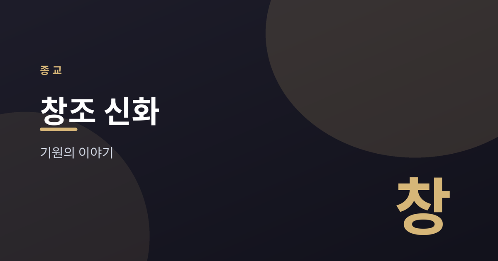
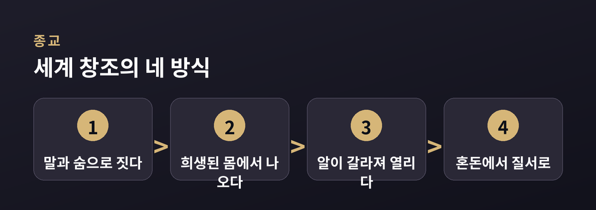

세계와 인간의 기원을 그리는 이야기들

세계 곳곳의 종교와 문화는 저마다 세계와 인간이 어떻게 시작되었는지를 이야기해 왔습니다.
이번 글에서는 여러 전통의 창조 서사를 나란히 놓고 비교종교·종교학의 관점에서 살펴봅니다.
어느 이야기가 사실이냐를 가리려는 글이 아닙니다. "이 전통에서는 이렇게 이야기한다"를 담담히 정리하는 글입니다.
유대교와 기독교의 창세기는 신이 말씀으로 세계를 지었다고 전합니다.
빛이 있으라 하니 빛이 있었고, 엿새에 걸쳐 하늘과 땅, 생물과 인간이 차례로 놓입니다.
후대 신학에서는 이를 아무것도 없는 데서 지어냈다는 '무로부터의 창조' 개념으로 다듬었습니다.
이슬람의 꾸란도 신이 하늘과 땅을 지었다고 이야기합니다.
신은 흙으로 최초의 인간 아담을 빚고 그에게 생명을 불어넣습니다.
아담은 이 전통에서 인류의 시작이자 신의 뜻을 맡은 존재로 그려집니다.
세 전통은 뿌리를 공유하면서도 강조점이 조금씩 다릅니다.
공통점은 분명합니다.
하나의 창조주가 자기 의지로 세계를 낳는다는 결입니다.
힌두교 전통에는 하나의 정본 대신 여러 판본이 함께 전해집니다.
어떤 이야기에서는 창조신 브라흐마가 세계를 펼치고 거두기를 반복합니다.
리그베다의 푸루샤 찬가에서는 원초의 거인이 희생되어 그 몸에서 세계가 나뉘어 나옵니다.
입에서는 사제 계급이, 팔에서는 전사 계급이 나왔다고 전하기도 합니다.
여기서 시간은 한 번 시작해 끝나는 직선이 아닙니다.
생성과 소멸이 끝없이 되풀이되는 순환의 우주로 그려집니다.
세계의 기원을 반복되는 리듬으로 보는 시선입니다.
중국 신화에서는 반고(盤古)가 알 속의 혼돈을 열어 하늘과 땅을 나눕니다.
그가 자라날수록 하늘은 높아지고 땅은 두터워졌다고 이야기합니다.
그가 쓰러진 뒤 몸은 산과 강, 해와 달이 되었다고 전합니다.
여와(女媧)는 흙을 반죽해 사람을 하나하나 빚었다고 이야기합니다.
세계를 여는 일과 사람을 빚는 일이 서로 다른 신에게 나뉘어 있는 셈입니다.

북유럽 신화에서는 원초의 거인 이미르의 몸에서 세계가 만들어집니다.
살은 대지가 되고 뼈는 산이 되며 피는 바다가 되었다고 이야기합니다.
그리스 신화는 텅 빈 카오스에서 질서 잡힌 우주가 갈라져 나왔다고 전합니다.
서로 멀리 떨어진 지역이지만, 혼돈에서 질서로 나아가는 얼개는 닮았습니다.
이야기들을 겹쳐 보면 몇 가지 무늬가 반복됩니다.
말이나 숨으로 짓거나, 희생된 몸에서 세계가 나오거나, 알이 갈라지며 시작됩니다.
방식은 달라도 인간은 대체로 특별한 자리를 얻습니다.
흙으로 빚어지거나 신의 숨을 받아, 다른 피조물과 구분되는 존재로 그려집니다.
이런 닮음을 두고 학자들은 여러 해석을 내놓습니다.
서로 영향을 주고받았다고 보기도 하고, 인간이 세계를 이해하는 방식 자체가 비슷하기 때문이라 보기도 합니다.
혼돈에서 질서로, 그리고 그 질서 속 인간의 자리 — 이 흐름이 여러 전통에 공통으로 흐릅니다.
정리하면 이렇습니다.
창조 신화는 세계의 물리적 기원을 설명하려는 보고서가 아닙니다.
각 문화가 세계를 어떻게 이해하고 무엇을 귀하게 여기는지를 담는 그릇에 가깝습니다.
질서를 세운 신을 우러르는 전통이 있고, 순환하는 시간을 받아들이는 전통이 있습니다.
같은 물음에 서로 다른 답을 마련해 온 셈입니다.
그 답 속에는 저마다의 세계관과 삶의 태도가 배어 있습니다.
과학이 말하는 우주의 기원, 이를테면 빅뱅 이론은 이 이야기들과 다른 층위에 있습니다.
종교학은 어느 편이 옳은지를 다투는 대신, 각 이야기가 무엇을 말하려 했는지를 차분히 읽어 냅니다.
"창조 신화는 세계의 시작보다 그 세계를 살아가는 사람의 마음을 비춘다."
서로 다른 이야기들을 나란히 읽는 일은, 결국 인간이 자신을 이해해 온 여러 길을 함께 걷는 일인지도 모릅니다.